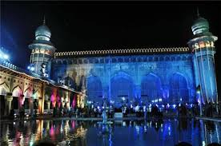
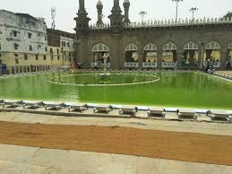
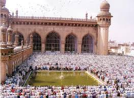

❮
❯
One of the oldest mosques in the city, the Mecca Masjid in Hyderabad is one of the largest Masjids in India. This revered shrine was commissioned by Muhammad Quli Qutub Shah, the fifth ruler of the Qutub Shahi Dynasty in the year 1614, while the construction saw completion in the year 1694. It is believed that he himself laid down the foundation stone of the edifice, and the arch embellishments over the main sanctum are made from the soil of the Holy Land of Mecca. It is due to this reason that it is called the 'Makkah Masjid' as well. With a capacity to accommodate as many as 10,000 people at any given time, the mosque also houses a hair belonging to Prophet Muhammad has been safely secured in the premises of the mosque. With its intricately designed architecture, rich history, and religious significance, the Mecca Masjid is indeed a humbling sight to behold.